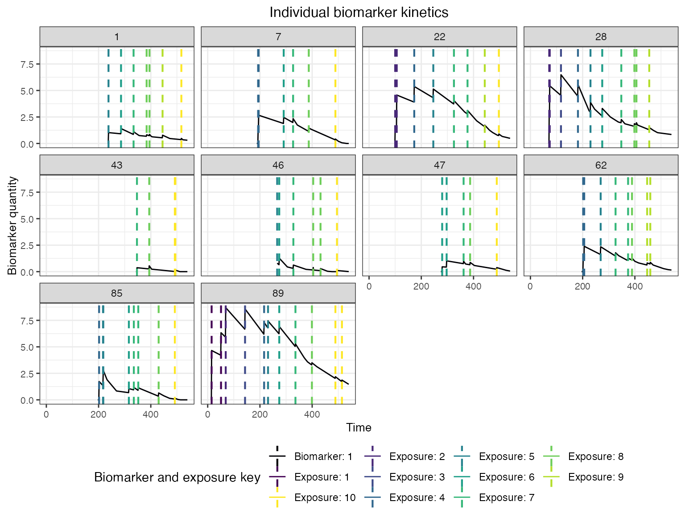
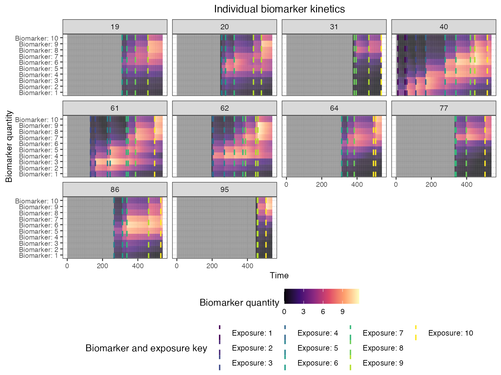
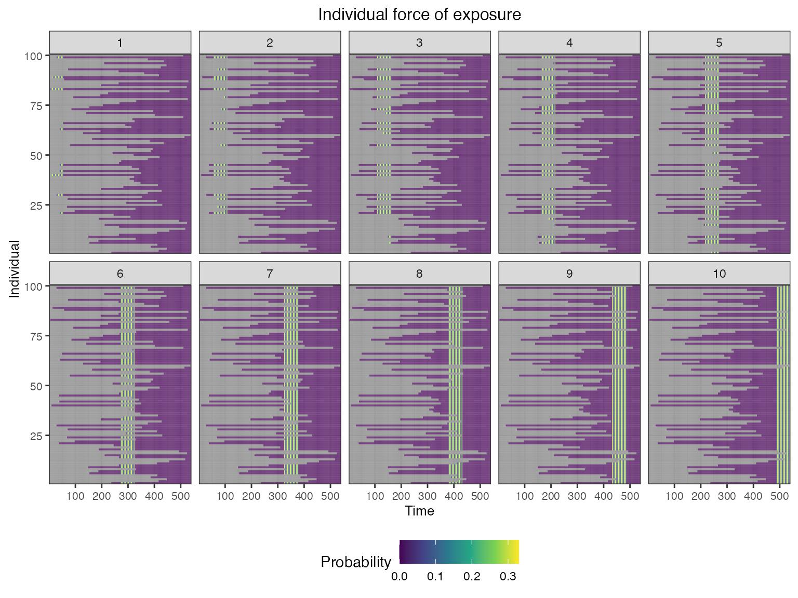
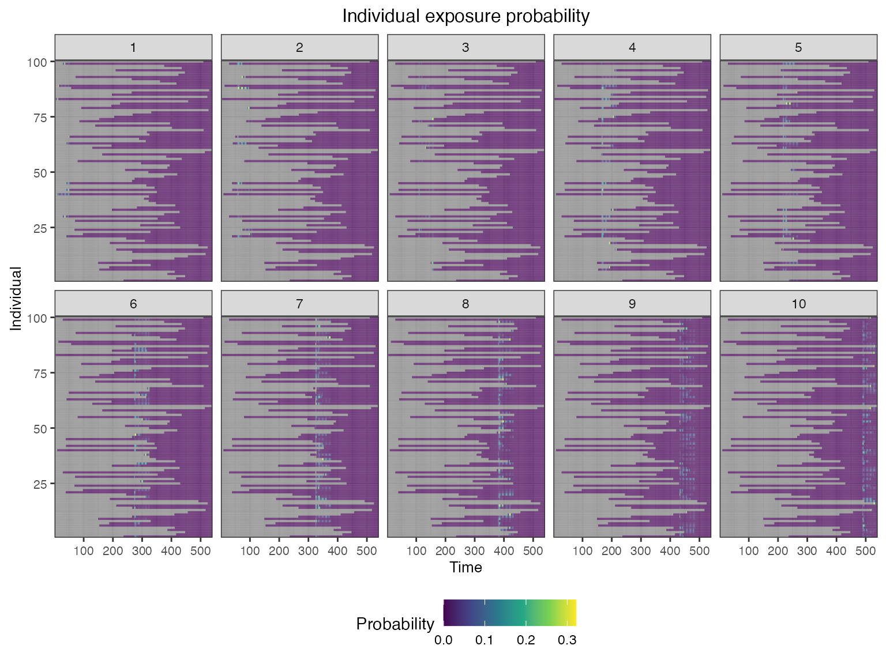
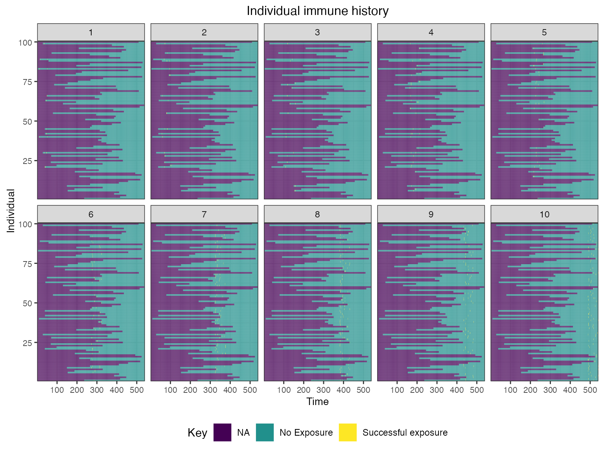
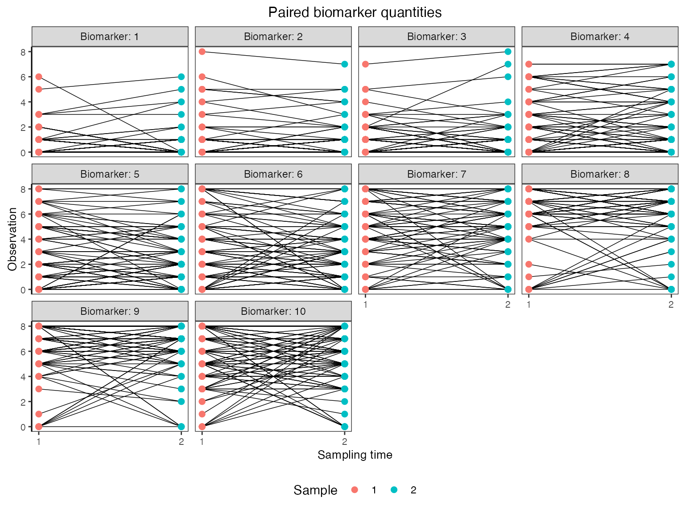

Case study 3: a multi-strain pathogen system with cross-reactive antibody dynamics
Source:vignettes/case_study_3_influenza.Rmd
case_study_3_influenza.Rmd1. Outline
This vignette demonstrates how serosim can simulate complex antibody profiles arising from repeated exposure to antigenically related strains of the same pathogen, with a case study based on A/H3N2 influenza. It is recommended that you read the quick-start guide before working through this case study. In this system, each exposure stimulates a combination of de novo and memory antibody responses, resulting in the presence of antibodies effective against all strains. The effectiveness of these antibodies against a particular strain depends on the set and timing of strains the individual has been exposed to, and the antigenic similarity of those strains Krammer (2019). The simulation will capture this process by tracking infection dynamics and antibody profiles to multiple strains for 100 individuals across a 45 year period, demonstrating how complex antibody profiles, or antibody landscapes, build over the life course Lessler et al. (2012). A key concept for this simulation is antigenic space – a conceptual framework for quantifying the antigenic relatedness of strains from the perspective of the immune response (Smith et al. 2004). We will simulate a longitudinal serological survey with discretized paired measurements (based on the haemagglutination inhibition assay) of each individual’s antibody levels against each strain based on existing serosurvey data (Yang et al. 2020).
Within each section below, we will briefly explain the rationale behind the model structure and parameters. We caution users to conduct their own research into the models and associated parameters which best align with their disease system and biomarker test kits.
Load necessary packages:
2. A/H3N2 influenza epidemiology and simulation settings
A/H3N2 influenza has distinctive epidemiology, whereby one group of antigenically similar viruses (termed a cluster) circulates for 3-5 years before being replaced by a new, antigenically distinct cluster (Smith et al. 2004). The phylogeny of A/H3N2 viruses is often referred to as ladder-like due to the fact that influenza demonstrates limited genetic diversity at a single point in time, but substantial diversity over the long-term. We will capture this in our simulation by assuming that 10 antigenically distinct strains each circulate for 4.5 years before being replaced by the next strain, roughly representing the introduction of A/H3N2 into humans in 1968. The simulation will use monthly time steps to balance computational time with sufficient time-resolution to represent transient antibody kinetics.
For this simulation, the only demography variable we will track is age – individuals cannot be exposed to influenza strains which circulated before they were born.
## Specify the number of time periods to simulate
times <- seq(1,4.5*10*12,by=1)
simulation_settings <- list("t_start"=1,"t_end"=max(times))
## Generate the population demography tibble
N<-100
## See help file(?generate_pop_demography) for more information on function arguments.
## age_min is set to 0 which allows births to occur until the last time step
## Let's assume that no individuals are removed from the population and set prob_removal to 0
demography <- generate_pop_demography(N, times, age_min=0, prob_removal=0)
n_strains <- 103. Exposure to biomarker mapping
One of the key features of influenza serology is that different strains of the same subtype are antigenically related due to the presence of both conserved and distinct epitopes on surface proteins of the strains. Strain replacements are the result of mutations at key epitopes which allow for immune escape. Thus, an individual’s immune profile is the culmination of antibodies targeting combinations of epitopes consistent with the set of strains they have been exposed to.
There are two ways we could model these dynamics with serosim. First, we could map each strain to a set of epitopes, such that sets of epitopes partially overlap between strains. The exposure ID variable would correspond to each strain, and the biomarker IDs would correspond to antibodies binding to each specific epitope. Real data at this resolution are rare, particularly for serosurveillance, requiring a complex assays (such as phage immunoprecipitation sequencing, PhIP-Seq) which detects antibody binding to short peptide sequences. The data demands and computational complexity make this as a challenging model to simulate.
The second approach, and the one we will take here, is to consider each biomarker ID as the output of a common assay, such as a microneutralization assay or haemagglutination inhibition assay. These assays measure the overall binding or reactivity of antibodies in a serum sample against whole proteins or virions, and thus represent the aggregate effect of all epitope-level binding. A high value on this sort of assay reflects the joint effect of high antibody levels against epitopes present in the assay; a lower value reflects lower antibody concentrations and/or recognition of fewer epitopes. Strains are considered to cross-react when antibodies elicited following exposure to one strain produce a measurable effect against another strain, reflecting the sharing of epitopes between the two strains.
For the serosim biomarker map, we model this system as an all-to-all mapping between each strain an individual could be exposed to (exposure ID) and each strain that could be included in the assay (biomarker ID).
Another key feature of influenza epidemiology is antigenic drift, where the accumulation of amino acid substitutions in surface proteins are selected for by population immunity leading to a gradual change in the virus phenotype over time. For this simulation, we will represent antigenic drift as a simple random walk with log-normally distributed moves through 2-dimensional antigenic space. We then assume a simple cross-reactivity model, where the amount of cross-reactivity elicited from infection with a particular strain to another strain is a function of their euclidean distance in this space.
## Create a matrix giving cross-reactivity between each strain pairing
x_coord <- numeric(n_strains)
y_coord <- numeric(n_strains)
## Simulate antigenic drift as a random walk in two dimensions
x_coord[1] <- 0
y_coord[1] <- 0
## Each strain is antigenically drifted from the previous one with log-normally distributed
## moves through 2-dimensional antigenic space
for(i in 2:n_strains){
x_coord[i] <- x_coord[i-1] + rlnorm(1, mean=log(1), sd=0.5)
y_coord[i] <- y_coord[i-1] + rlnorm(1, mean=log(1), sd=0.5)
}
## Cross-reactivity is a function of antigenic distance of the form e^-b*x, where x is the
## euclidean distance between strains and b is a parameter
antigenic_map <- data.frame(x_coord=x_coord, y_coord=y_coord)
antigenic_map <- as.matrix(dist(antigenic_map, diag=TRUE, upper=TRUE))
##############
antigenic_map <- exp(-0.25*antigenic_map)
##############
antigenic_map <- antigenic_map %>% as_tibble() %>%
mutate(exposure_id=1:n()) %>%
pivot_longer(-exposure_id) %>% rename(biomarker_id=name) %>%
mutate(biomarker_id = as.numeric(biomarker_id))4. Exposure model
We now turn to the exposure model determining the probability that an individual is exposed to each strain at each time point. It is straightforward to represent the serial replacement of strains in serosim by setting the exposure ID dimension in the force of exposure array to be zero at times before and after the strain circulates. Furthermore, we can add seasonality to the model by multiplying the force of exposure by a sinusoidal term (Grassly2006?). We will set the force of exposure to have annual cycles with a peak basic reproductive number of 2, assuming a 5-day infectious period, though note that the exposure model simply describes the force of exposure acting on individuals in the simulation, and is not a dynamical transmission model.
## Seasonal forcing with a peak force of infection of 0.2 and minimum of 0
## If we assume an infectious period of 5 days, the simulation gives an annually oscillating R0 between 0 and 2
beta <- 0.2
sigma <- 1
seasonality <- beta*(1 + sigma*cos(2*pi*(times-1)/12))
## Create an empty array to store the force of exposure for all exposure types
foe_pars <- array(0, dim=c(1,max(times),n_strains))
t_start <- 1
## Set the circulation duration for each strain
for(strain in seq_len(n_strains)){
t_end <- t_start + 4.5*12 - 1
foe_pars[,t_start:t_end,strain] <- seasonality[t_start:t_end]
t_start <- t_end + 1
}
## Specify a simple exposure model which calculates the probability of exposure directly from the force of exposure at that time step. In this selected model, the probability of exposure is 1-exp(-FOE) where FOE is the force of exposure at that time.
exposure_model<-exposure_model_simple_FOE
## Examine the probability of exposure to each strain over time for the specified exposure model and foe_pars array
plot_exposure_model(exposure_model=exposure_model_simple_FOE, times=times, n_groups = 1, n_exposures = 10, foe_pars=foe_pars) + facet_wrap(~exposure_id)5. Immunity model
The immunity model determines the probability that an exposure event induces an immunological response and becomes recorded in the immune history. For influenza A/H3N2, a common correlate of protection is haemagglutination inhibition assay (HI) titre against the exposure strain. Human challenge studies can be used to parameterize a logistic model for the relationship between HI titre and probability of infection, which forms the basis for the model we will use here (Coudeville2010?).
## Specify immunity model within the runserosim function below
immunity_model<-immunity_model_ifxn_biomarker_prot
## Define antibody-mediated protection parameters
model_pars_immunity <- tibble(name=c("biomarker_prot_midpoint","biomarker_prot_width"),
mean=c(2.8,1.3),sd=c(NA,NA),distribution=c(NA,NA))
model_pars_immunity <- expand_grid(biomarker_id=1:n_strains, model_pars_immunity) %>%
mutate(exposure_id=paste0("Strain_",biomarker_id), biomarker_id=paste0("Biomarker_",biomarker_id))
## Parameters chosen from Coudeville et al. 2010
plot_biomarker_mediated_protection(seq(0,8,by=0.1), biomarker_prot_midpoint=2.8, biomarker_prot_width=1.3) 
6. Antibody model and parameters
Models of antibody kinetics following A/H3N2 influenza infection vary in their complexity, and identifying key immunological mechanisms of waning, imprinting and back-boosting remains an area of ongoing research (Ranjeva2019?). For this simulation, we assume a simple monophasic boosting and waning model, where individuals receive a boost of approximately 4 HI titre units following infection against the biomarker ID of the exposure strain which wanes slowly over time. Cross-reactive boosting to other biomarker IDs is determined by antigenic distance as described above.
To represent heterogeneity in post-infection antibody kinetics, we will assume that individual boosting and waning parameters for each infection event are log-normally distributed with mean and standard deviation specified on the natural scale.
## Specify the antibody model
antibody_model<-antibody_model_monophasic_cross_reactivity
## Antibody model parameters
model_pars_kinetics <- tibble(name=c("boost","wane"),mean=c(4,0.01),sd=c(1,0.01),distribution=c("log-normal","log-normal"))
model_pars_kinetics <- expand_grid(exposure_id =seq_len(n_strains),model_pars_kinetics) %>%
mutate(biomarker_id=paste0("Biomarker_", exposure_id), exposure_id = paste0("Strain_",exposure_id))
model_pars_observation <- expand_grid(biomarker_id=paste0("Biomarker_",seq_len(n_strains)),name="obs_sd",
mean=NA,sd=1,distribution="normal") %>% mutate(exposure_id=NA)
model_pars_original <- bind_rows(model_pars_kinetics,model_pars_immunity, model_pars_observation) %>% arrange(exposure_id, biomarker_id)
## Bring in the antibody parameters needed for the antibody model
## Note that the observation error parameter needed for the observation model (Section 7) is defined here too.
## Reformat model_pars for runserosim
model_pars<-reformat_biomarker_map(model_pars_original)
head(model_pars)## # A tibble: 6 × 6
## exposure_id name mean sd distribution biomarker_id
## <dbl> <chr> <dbl> <dbl> <chr> <dbl>
## 1 1 boost 4 1 log-normal 1
## 2 1 wane 0.01 0.01 log-normal 1
## 3 1 biomarker_prot_midpoint 2.8 NA NA 1
## 4 1 biomarker_prot_width 1.3 NA NA 1
## 5 2 boost 4 1 log-normal 2
## 6 2 wane 0.01 0.01 log-normal 2
## Specify the draw_parameters function
draw_parameters<-draw_parameters_random_fx
## Plot example biomarker trajectories given the specified antibody kinetics model, model parameters and draw parameters function
plot_antibody_model(antibody_model_monophasic_cross_reactivity, N=10, model_pars=model_pars,draw_parameters_fn = draw_parameters_random_fx, biomarker_map=antigenic_map)7. Observation model and sampling times
Finally, we implement the observation model to reflect the
haemagglutination inhibition assay which is often used for influenza
serology (Fonville2014?).
This is a discretized assay with some measurement error, which we will
represent using the observation_model_discrete_noise
function. The assay is bounded between values of 0 and 8. We will assume
high assay sensitivity and specificity, noting that many true positive
samples will be simulated with a HI titre of 0 through the noise
function.
To simulate a longitudinal survey with paired samples, we simulate two observation times for each individual centered either around the last time step or one year prior.
## Specify the observation model
observation_model<-observation_model_discrete_noise
## Specify the cutoffs for the discrete assay. This will depend on the dilutions of the haemagglutination assay.
## This is a matrix with each row containing all of the cutoffs for that biomarker. Here, we have set the same cutoffs for all biomarkers
breaks <- seq(0,8,by=1)
cutoffs <- matrix(breaks,nrow=n_strains,ncol=length(breaks), byrow=TRUE)
## Specify assay sensitivity and specificity needed for the observation model
sensitivity<-0.95
specificity<-0.99
## Specify observation_times (serological survey sampling design) to observe all biomarkers across all individuals at the end of the simulation
obs1 <- expand_grid(tibble(i=1:N, t = floor(rnorm(N, 528, 3))), b=1:n_strains)
obs2 <- expand_grid(tibble(i=1:N, t = pmin(floor(rnorm(N, 540, 3)), 540)), b=1:n_strains)
observation_times <- bind_rows(obs1, obs2)8. Run simulation
We now have all the pieces in place to run the full serosim model. Note that for this example, we will use serosim’s optional arguments for speeding up the model, exploiting both the attempted precomputation step and parellelization.
## Run the core simulation
res<- runserosim(
simulation_settings=simulation_settings,
demography=demography,
observation_times=observation_times,
foe_pars=foe_pars,
biomarker_map=antigenic_map,
model_pars=model_pars,
exposure_model=exposure_model_simple_FOE,
immunity_model=immunity_model_ifxn_biomarker_prot,
antibody_model=antibody_model_monophasic_cross_reactivity,
observation_model=observation_model_discrete_noise,
draw_parameters=draw_parameters_random_fx,
## Other arguments needed
cutoffs=cutoffs,
sensitivity=sensitivity,
specificity=specificity,
VERBOSE=NULL,
attempt_precomputation = TRUE,
parallel=TRUE,
n_cores=8
)
## Note that models and arguments specified earlier in the code can be specified directly within this function.9. Generate output plots
Now that the simulation is complete, let’s plot and examine the simulation outputs. First, let’s look at the full longitudinal kinetics to one biomarker for a random subset of individuals, marking the timing of each infection and the exposure ID. The vertical dashed lines show the timing of infections, colored by their exposure ID.
## Plot influenza strain A specific biomarker kinetics and exposure histories for 10 individuals
plot_subset_individuals_history(res$biomarker_states %>% filter(b==1), res$immune_histories_long, subset=10, demography)## Warning: Removed 236 rows containing missing values (`geom_line()`).
We can also look at the biomarker kinetics for all biomarker IDs
simultaneously by setting the heatmap argument to
TRUE.
## Plot influenza strain A specific biomarker kinetics and exposure histories for 10 individuals
plot_subset_individuals_history(res$biomarker_states, res$immune_histories_long, subset=10, demography, heatmap=TRUE)
We can see the time-varying exposure probabilities of the different strains, as well as the individual-level exposure probabilities mediated by their birth time.
## Plot individual probability of exposure for all exposure types.
## This is the output of the exposure model. Note that this reflects our inputs that the influenza strains were never co-circulating.
plot_exposure_force(res$exposure_force_long)
## Plot individual successful exposure probabilities for all exposure types
## This is the output of the exposure model multiplied by the output of the immunity model.
## In other words, this is the probability of exposure event being successful and inducing an immunological response
plot_exposure_prob(res$exposure_probabilities_long)
We also track each individual’s history of infections and their true latent biomarker quantity against each biomarker ID.
## Plot individual exposure histories for all exposure types
plot_immune_histories(res$immune_histories_long)
## Plot biomarket states for all individuals over time
plot_biomarker_quantity(res$biomarker_states)Finally, we are interested in simulating a realistic serological survey. The following plots show the sort of observations that we would obtain from paired samples collected one year apart and tested for HI titres against each of the 10 strains.
## Plot the serosurvey results (observed biomarker quantities)
plot_obs_biomarkers_one_sample(res$observed_biomarker_states,add_boxplot=TRUE)
## Plot the influenza strain A serosurvey results (observed biomarker quantities)
plot_obs_biomarkers_paired_sample(res$observed_biomarker_states)## Warning: Removed 22 rows containing missing values (`geom_line()`).## Warning: Removed 40 rows containing missing values (`geom_point()`).
10. Conclusions
In this vignette, we have demonstrated how a complex epidemiological system representing multi-strain A/H3N2 serology can be implemented using serosim’s plug-and-play framework. Although this simulation is not intended to be an exhaustive, realistic representation of A/H3N2 dynamics, it demonstrates how the multiple layers of the data-generating process interact to give rise to complex immune landscapes over time. Alternative models and parameterizations can be implemented to reflect different pathogens.